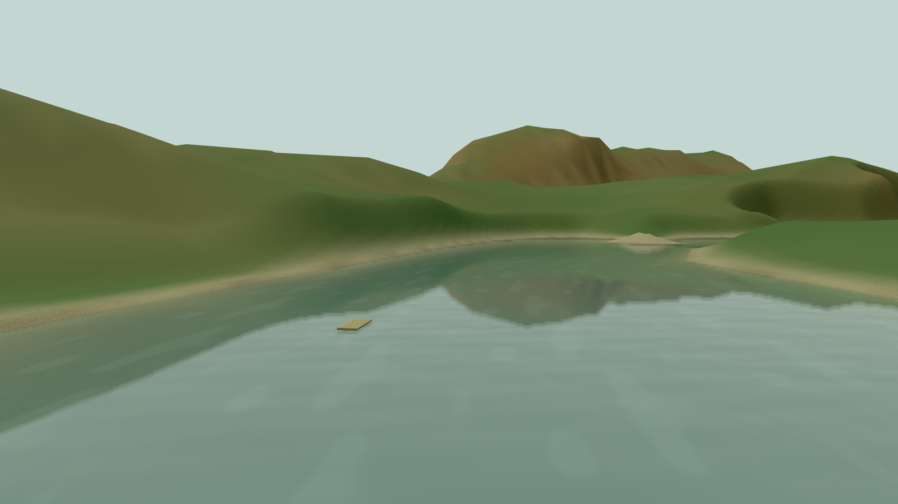
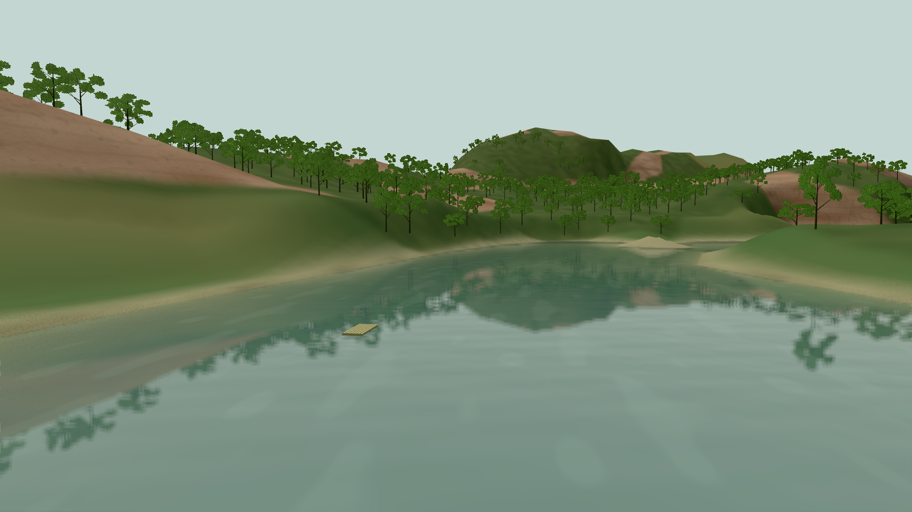
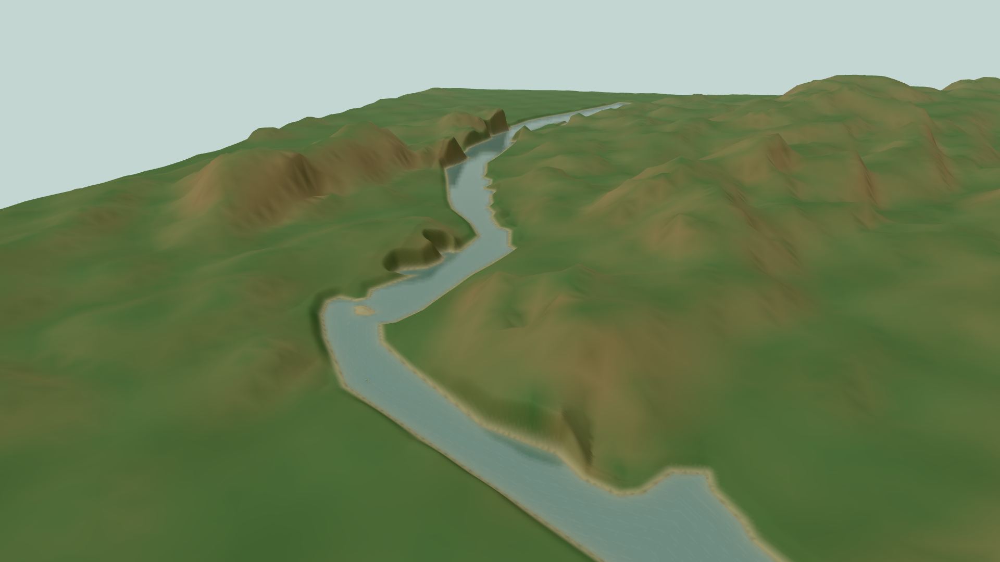
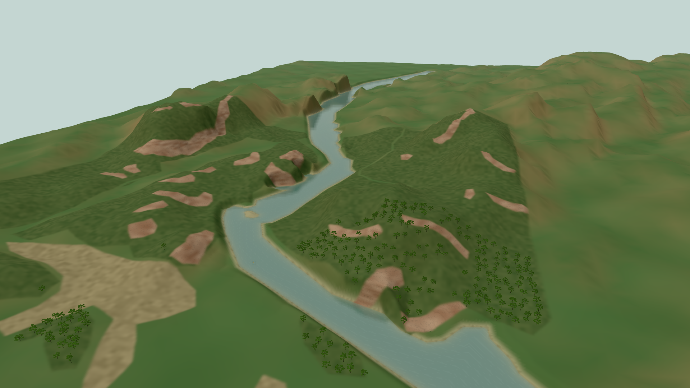
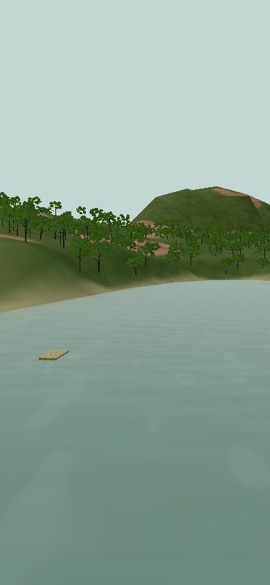

问山 · 龙虎山 / 制作记录
泸溪河：有依据的地表与林地
依据 2023 年 10 月 30 日的河湾影像，区分 25 处可见裸岩、8 片林地和 5 片农田，保留村落与道路间隙。原始高程和 OSM 岸线没有移动，河流继续使用流水、局部倒影与竹筏尾流。
同一河湾近景

修改前 · 单一山坡表面
修改后 · 分类岩面、枝干与沿岸倒影区域视角

修改前 · 真实河道与粗高程
修改后 · 按影像范围区分地表已经落地的内容
位置与来源：影像用于判读范围。网页使用独立制作的分类遮罩，不加载卫星影像颜色纹理。38 个人工判读面及原图像素坐标保留在源数据中。
可编辑资产：2,838 个代表性树位样本，排除 1 个与 OSM 水域冲突的点，实际加载 2,837 个。树木有枝干、折叶和远景枝叶层级；Blender 源场景与 GLB 已保存。树木数量不代表实地调查数量。
实际验证：本机 1080p 高清河湾近景约 59.7 FPS，8 秒样本的 p95 帧时 21 ms。手机视口使用低画质；此结果不代表实体手机性能或长期稳定下限。
手机近景

低画质保留岸线、林地和流水，环境反射减少额外绘制。